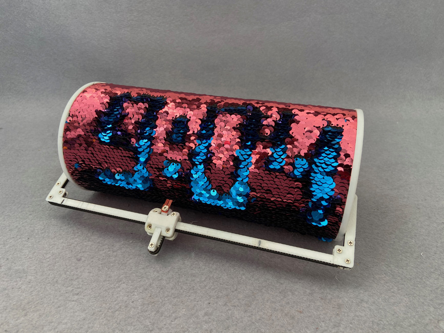
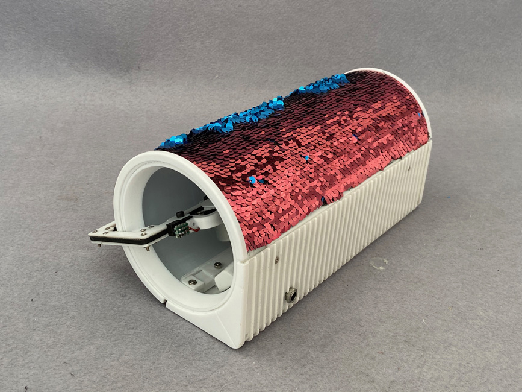
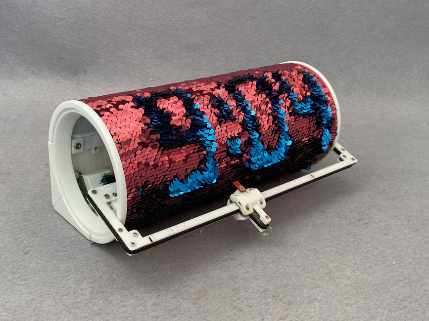
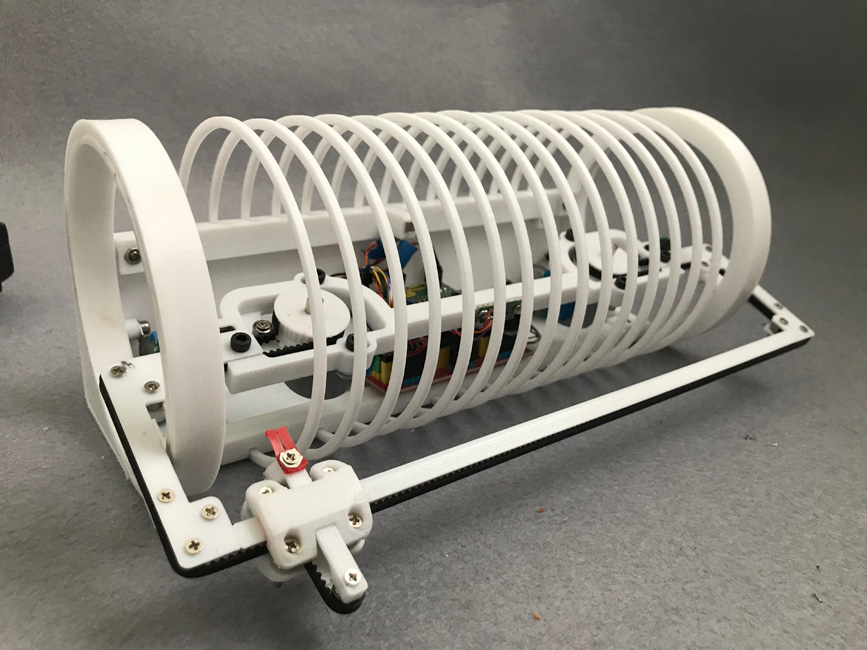
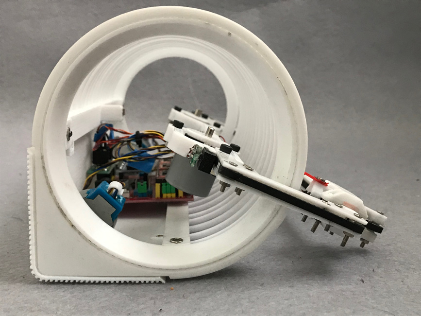
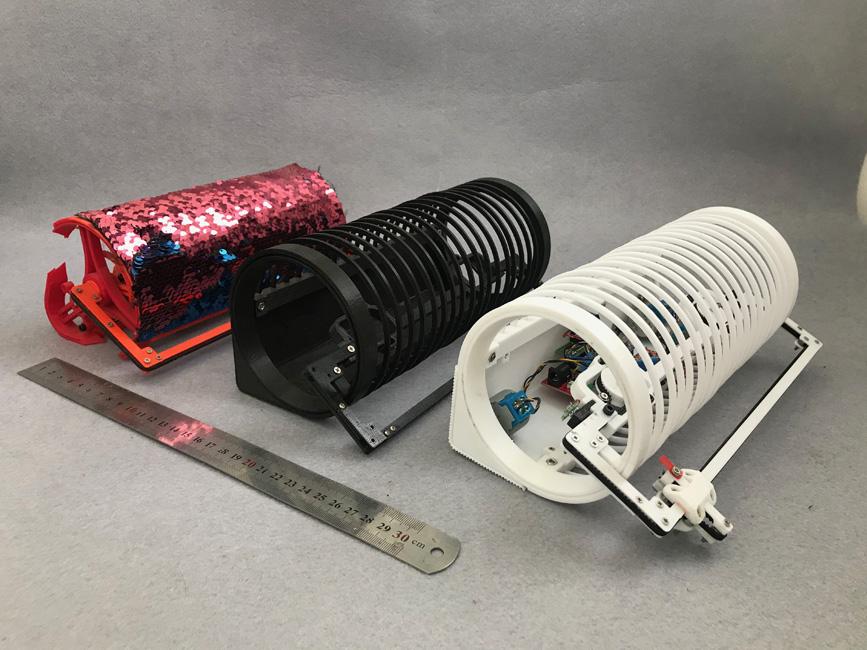
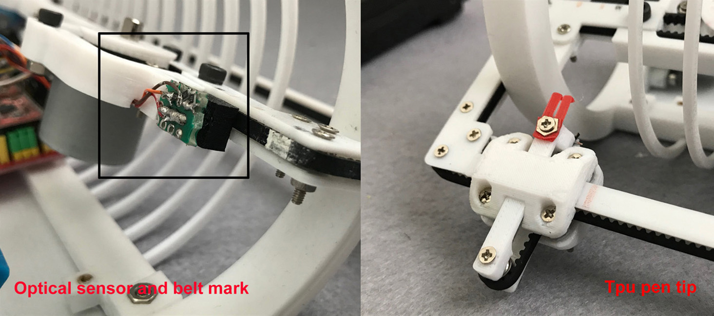
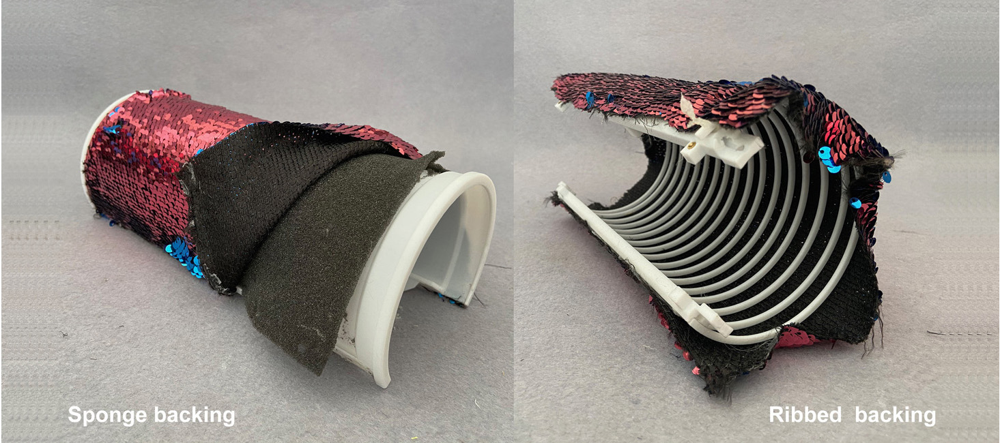
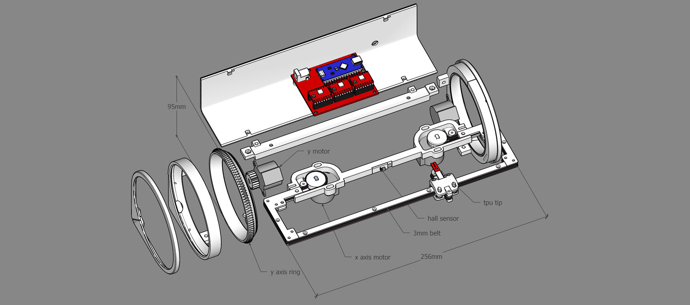

Ekaggart Singh Kalsi









This project is a continuation of my quest to build a robotic clock which can write and rewrite the time continuously day in and day out and keep going doing it. My first attempt with doodle clock was a failure due to the marker drying up and the second attempt with doodle#2 failed as the display got scratched very soon . This clock was inspired by my daughters t shirt with the pattern changing sequin cloth glued to it. After getting some stock fabric from a vendor i figured out the size of the clock based on the minimum resolution of the cloth . The fabric has circles of 5mm stitched 3 mm apart. Also another limit of the clock was my printer bed size of 245x170mm The kinematics The kinematics of the clock consists of a mix of h-bot and Cartesian system. The y axis consists of the two rings on the extreme ends of the clock driven by 2 24byj48 motors . The rings are basically gears constrained in outer rings similar to a hubless wheel. The x-axis consists of a strut holding the two rings together and driving a belt routed on a h-bot based path. The belt is driven by two motors. The motors when moving in the same direction move the pen carriage left or right on the x-axis while when then move in the opposite direction move the pen up or down.Figuring out the cloth backing The Sequin cloth consists of disks which are stitched to a a fabric backing. The Disks flip easily with a finger as they are mounted on a t-shirt or a bag which has a soft backing .But the moment i mounted it on cylinder it stopped flipping as the disks got over constrained by the hard backing . First i tried a ribbed structure as a backing with the fabric stretched on it. It worked but made it very complicated to construct. Finally i figured it out that a simpler way was to just add a 3 mm sponge as a backing to the cloth to give the disks the freedom to flip. The tip of the pen The tip of the pen was very tricky to figure out. Getting a material to act like the tip of a human finger is not very simple. The disks are very slipper and need just the right friction to flip them. The final solution was tip make of Tpu with a split hook.